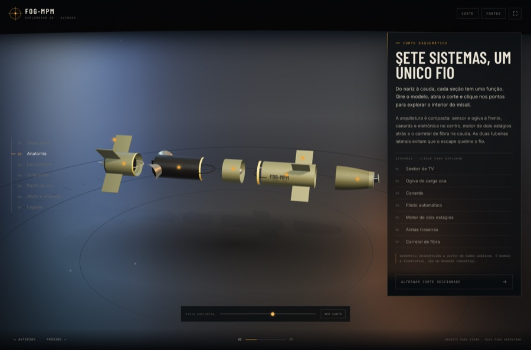
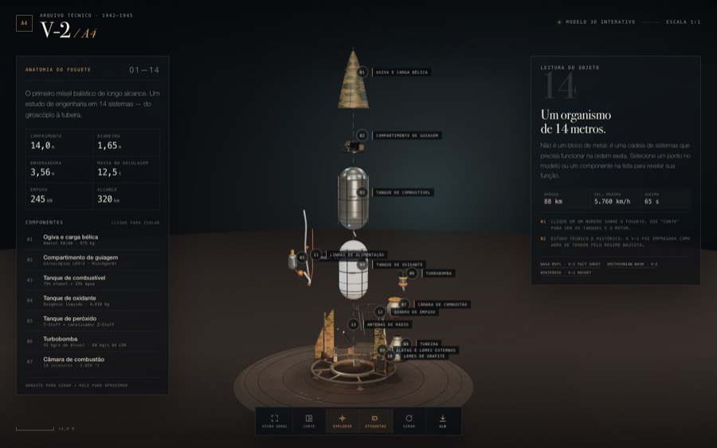

FOG-MPM · Explorador 3D ↗
O míssil guiado por fibra óptica da Avibras em sete capítulos: anatomia com corte e raio-X, sequência de lançamento, jammer de RF ignorado pelo fio e engajamento de 12 km com telemetria e vídeo do seeker.

V-2 / A4 · Modelo 3D ↗
Os 14 sistemas do míssil balístico de 1942 em modelo procedural: corte seccional, vista explodida com etiquetas, ficha técnica de cada componente e exportação GLB para Blender ou Unity.
Z80 Lab ↗
Dez lições de assembly Z80 com assembler próprio, execução passo a passo, inspetor de memória, console e um verificador que confere o resultado dos seus programas.
Apple 1 Lab ↗
Dez lições de 6502 na máquina que começou a Apple: Woz Monitor, tela e teclado mapeados, montagem de programas, execução controlada e verificação automática dos exercícios.
Windows 95 ↗
O desktop de 1995 recriado em página única: boot, área de trabalho, menu Iniciar, janelas arrastáveis, Notepad, Paint, Calculadora, Minesweeper e desligar o sistema.
Macintosh 128K · 1984 ↗
O primeiro Mac: System 1.0 com Finder, disco de 400 KB, janelas, menu Apple, Read Me, About This Macintosh e calculadora — a interface que definiu o mouse e a área de trabalho.
Simulador de Deep Learning ↗
Neurônio, funções de ativação, propagação à frente e backpropagation — com treino de XOR ao vivo, curva de aprendizado e fronteira de decisão desenhada no plano. Bilíngue PT/EN.
Transformer em 3 minutos ↗
O mecanismo por trás da IA generativa traduzido para a linguagem de negócios, com uma demonstração interativa de atenção palavra por palavra.
Preditor de LLM local ↗
Estima tokens/s, tempo até o primeiro token, memória, contexto que cabe e energia de 23 modelos e 12 quantizações no Apple Silicon — antes de baixar os pesos.
Color Palette Generator ↗
Gera paletas de cinco cores com modos de harmonia, trava de cores, leitura de contraste WCAG, cópia em HEX/RGB/HSL e exportação em CSS, Tailwind, JSON e SVG. Salva no navegador.
Polarização de Transistores ↗
Como fixar o ponto de operação do BJT: regiões de operação, reta de carga DC, métodos de polarização e calculadoras que atualizam os diagramas enquanto você ajusta os resistores.
A Corrida Espacial ↗
EUA × URSS de 1957 a 1975: protagonistas, galeria, linha do tempo dos marcos e o legado tecnológico da disputa que colocou o homem na Lua.
The Space Race ↗
A versão em inglês do mesmo material: quem eram os protagonistas, os marcos de 1957 a 1975 e o que sobrou dessa disputa na tecnologia de hoje.
Tetris ↗
O clássico em um arquivo só: peças, próximas peças, pontuação e níveis. Teclado no desktop, controles de toque no celular.
Paciência · Klondike ↗
O jogo de cartas de sempre, com arrastar e soltar, movimentação automática para as fundações e vitória comemorada.